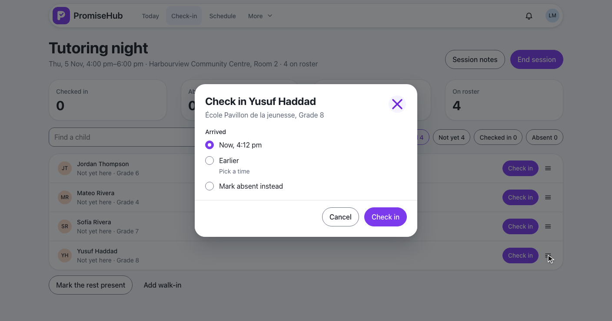
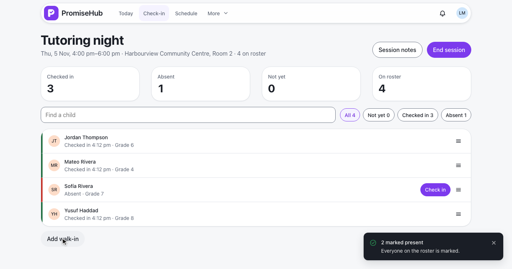
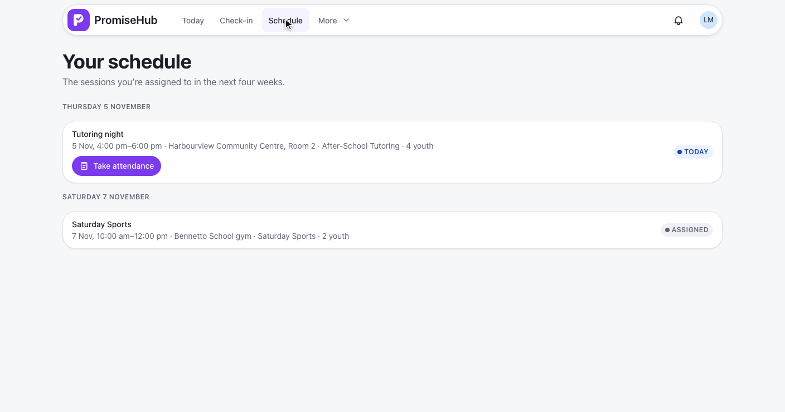
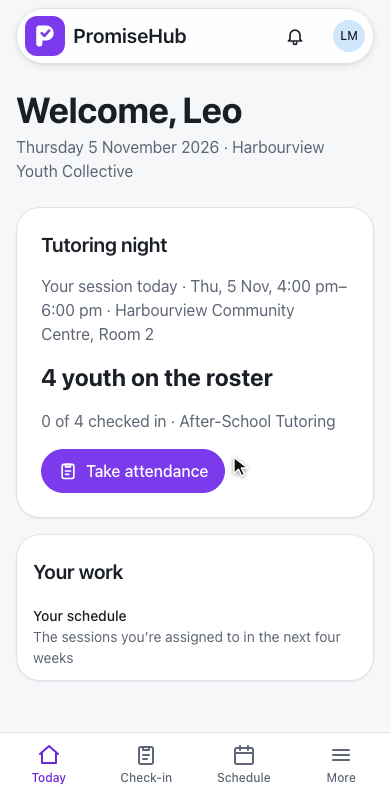
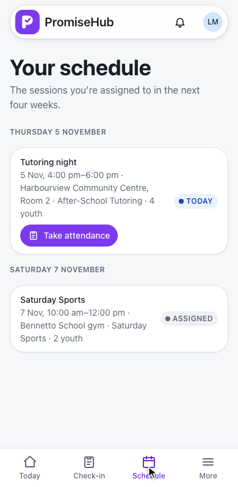
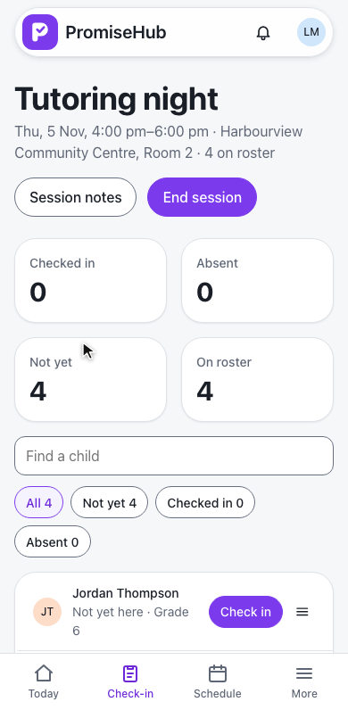
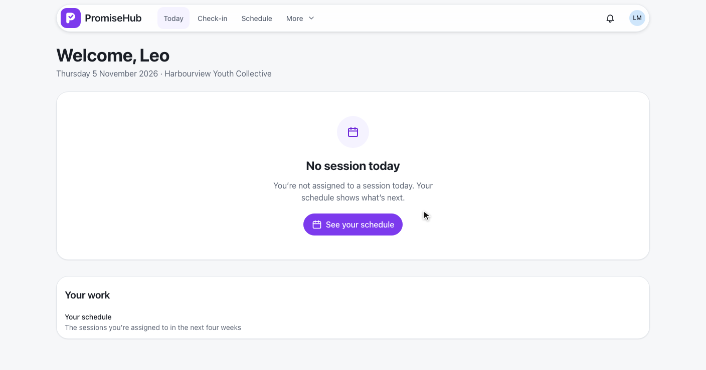
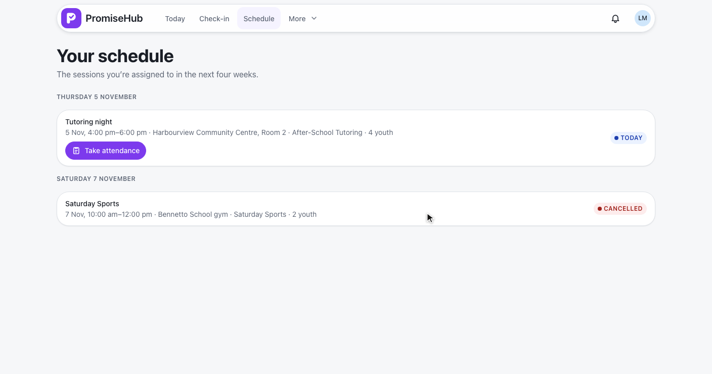
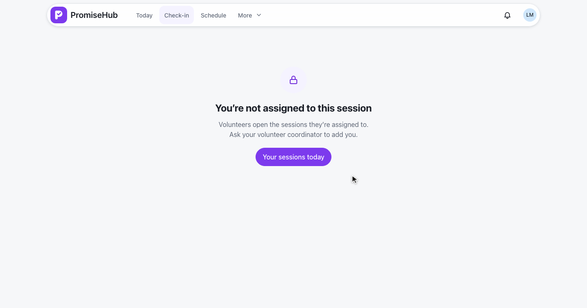

PromiseHub · Video 72
Use the volunteer portal
Today’s assigned session, the next four weeks, and present or absent for his own sessions only
Today’s assigned session, the next four weeks, and present or absent for his own sessions only
His session, then Take attendance.



| Leo can | Leo cannot |
|---|---|
| Open the sessions he is assigned to | Open any other session (403) or another organization’s (404) |
| Check in, mark absent, mark the rest present | Mark late or excused (403, nothing recorded) |
| See names and totals | See medical flags, Quick Cards, pickups or history |
QualifyAttendance · SessionAccess · L2-100 · ADR 0066
Today, then Assigned, by day.

His own assignments · not ended · within 28 days · L2-101
Today, Schedule, the roster.



No session, error, cancelled, empty, forbidden, Roll Call off.



VolunteerScheduleTests: window, order, roster size, status, today, cancelled, empty, roles, Roll Call off, tenancyVolunteerAttendanceTests: present and absent, late and excused refused, other sessions, history, corrections, tenancyvolunteer-portal.spec.ts on phone and laptop against the fake API, with axe on every state
Next: the guardian portal